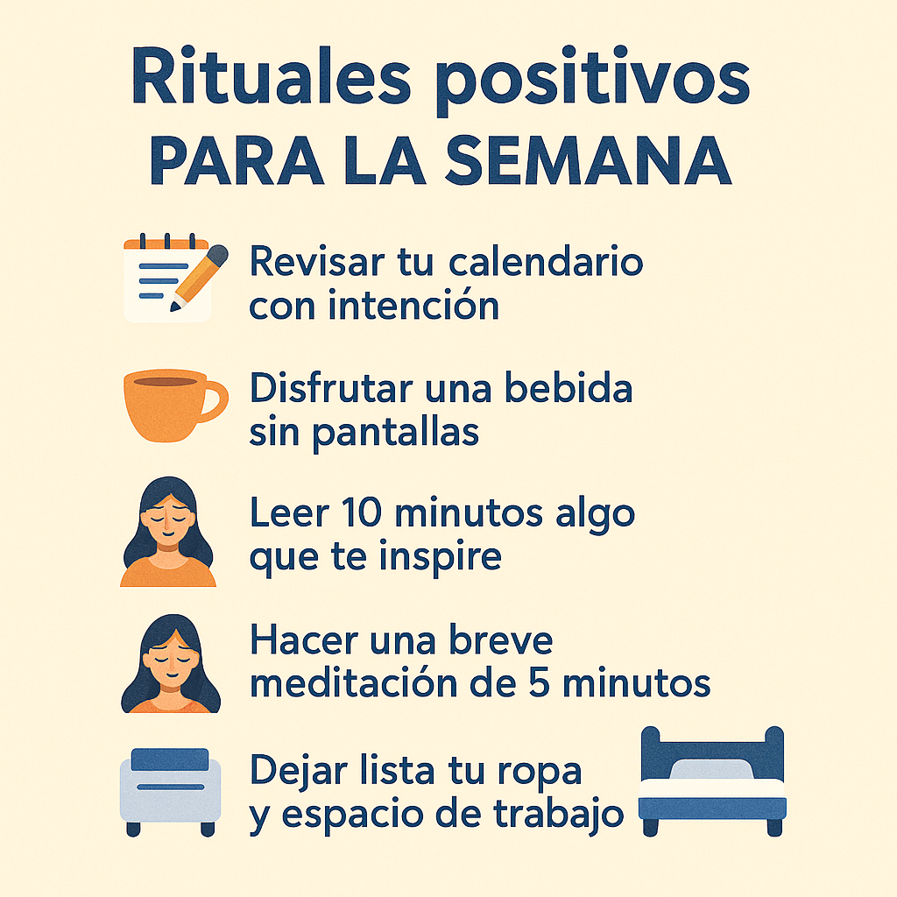

Pequeños rituales para empezar bien la semana
Iniciar la semana con intención puede marcar la diferencia entre el caos y la calma. Los rituales sencillos nos ayudan a centrarnos, establecer prioridades y recargar la mente.
¿Por qué crear rituales semanales?
Los rituales no son rutinas aburridas, sino prácticas conscientes que te conectan contigo mismo. Un ritual de inicio de semana puede ayudarte a:
- Reducir la ansiedad anticipatoria
- Recuperar claridad y foco
- Sentirte más preparado y motivado
También puedes combinarlos con micro-hábitos diarios o tu lista de gratitud semanal.
Ejemplos de rituales poderosos
- 📝 Revisar tu calendario con intención
- ☕ Disfrutar una bebida sin pantallas
- 📖 Leer 10 minutos algo que te inspire
- 🧘 Hacer una breve meditación de 5 minutos
- 🛏️ Dejar lista tu ropa y espacio de trabajo
Rituales complementarios
Además, puedes integrar tu ritual con otras acciones que potencien tu bienestar:
- Hábitos mañaneros para una mejor energía
- Ejercicios para calmar la mente en momentos de tensión
- Mini detox digital para liberar la mente del ruido online
Diseña el tuyo
No hay un único ritual correcto. Prueba distintas combinaciones y crea una secuencia que te dé paz y motivación para arrancar tu lunes con fuerza y serenidad.
💡 Inspírate y diseña tu ritual semanal. Empieza por uno y ve ajustando según lo que necesites.